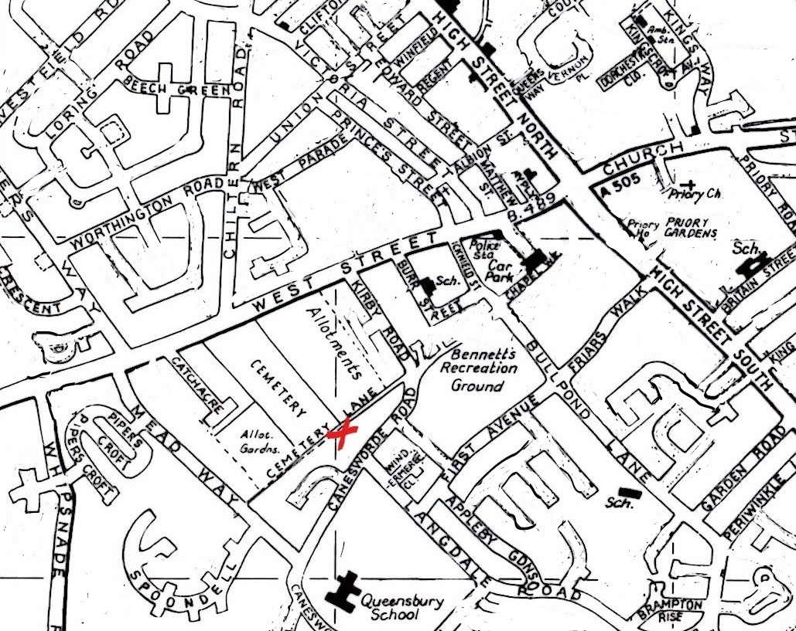

Coming from West Street Cemetery Lane is, about ¾ of the way along Meadway, on the left
immediately after the bus shelter.
Please drive slowly and carefully down the Lane to the bollards,
the Centre is on the right, it has a large car park with 46 marked spaces.
Remember most roads in Dunstable are 20 mph.
